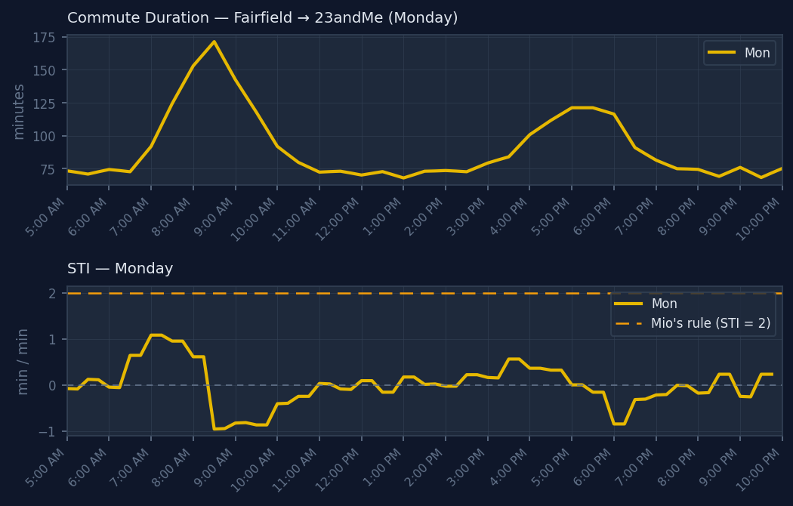

California Historic Vineyards
A Python pipeline that scrapes the Historic Vineyard Society website, analyzes grape varieties and soil types from California's historic vineyards, and generates an HTML report with charts.

Commute Optimizer
Charts Bay Area commute duration vs. departure time in 15-minute windows. Includes the Sakata Traffic Index (STI) — Mio's "2 minutes per minute" rule, empirically tested.